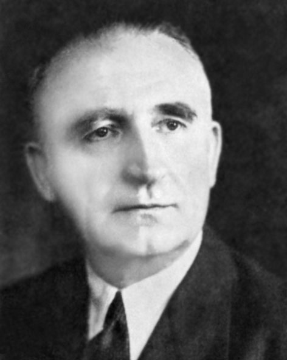

Український державний, військовий та політичний діяч. Полковник армії УНР, Голова Проводу Українських Націоналістів, другий голова
ОУН (1938–1964). Один з найближчих соратників полковника та засновника ОУН Євгена Коновальця.
Один з організаторів (співзасновників) Січових Стрільців та його проводу Стрілецької Ради, та Української Військової Організації.
Під час створення ОУН перебував у Львові, під постійним наглядом польської таємної поліції, також мав заборону від польської окупаційної
влади покидати Львів. Через що Андрій Мельник не зміг взяти участь у першому конгресі українських націоналістів у Відні. Проте навіть при
цьому, члени ПУН та провідні діячі ОУН вважали та відносили Андрія Мельника до співзасновників ОУН. Один з організаторів вбиства міністра
внутрішніх справ Польщі Броніслава Перацького.
Один з ініціаторів проголошення відновлення незалежності Української Держави у Києві. Саме тому, похідні група ОУН 5 жовтня 1941 року
утворили Українську Національну Раду (УНРада) у Києві 1941—1942, яка проголосила відновлення незалежності Української Держави.
Один з ініціаторів об'єднання трьох основних українських державних центрів — Львівської (Українська Національна Рада у Львові) та Київської
УНРади (Українська Національна Рада у Києві 1941—1942), а також Центральної Народної Ради Карпатської України. Тим самим було створено
Всеукраїнську Національну Раду (ВУНР).
Андрій Мельник, разом з Степаном Бандерою, Андрієм Лівицьким, та Павлом Скоропадським став співзасновником Українського Національного
Комітету.
Після завершення другої світової війни, був ініціатором консолідації українських самостійницьких сил, що призвело до створення Української
національної ради.
Був ініціатором створення та ідеолог надпартійного Світового Конгресу Вільних Українців.
Багатолітній в'язень польських тюрем, в'язень німецького концтабору Заксенгаузен.
Заборонив членам ОУН мститися членам ОУН(б), за фізичне знищення членів ОУН.
Послідовний прихильник відновлення незалежності Української Держави, на всіх її етнічних землях. Відповідно до українського
законодавства може бути зарахований до борців за незалежність України у ХХ сторіччі.
Іменем Андрія Мельника були названі вулиці у декількох містах України, зокрема у Дрогобичі, Івано-Франківську, Львові, Рівному,
Білій Церкві та Черкасах.
У відділі історії музею «Дрогобиччина» створено «Меморіальну кімнату Андрія Мельника», яка присвячена життю та діяльності Голови Проводу
(від особистих речей до тематичної літератури).
Дев'ятого квітня 2015 року, Верховна Рада України ухвалила Закон України «Про правовий статус та вшанування пам'яті борців за незалежність
України у XX столітті» в якому визнала учасників УВО, ОУН, та багатьох інших формувань, борцями за незалежність України.
15 серпня 2022 року Голова ОУН Богдан Червак зареєстрував петицію до Президента України в якій пропонує присвоїти Національному
університету оборони України ім'я Євгена Коновальця, а Національній академії внутрішніх справ ім'я Андрія Мельника.
Андрій Мельник є одним з героїв роману «Країна Ірредента» Романа Іваничука.
В Україні існують лише два пам'ятники Мельнику. З 23 липня 2006 р. у рідному селі Воля Якубова Дрогобицького району та від 17 грудня 2017 року
у м. Івано-Франківськ.
Андрій Атанасович Мельник

12 грудня 1890, Воля Якубова, Дрогобицький повіт, Королівство Галичини та Володимирії, Австро-Угорщина, нині Дрогобицький район,
Львівська область, Україна
—
1 листопада 1964, Кельн, ФРН